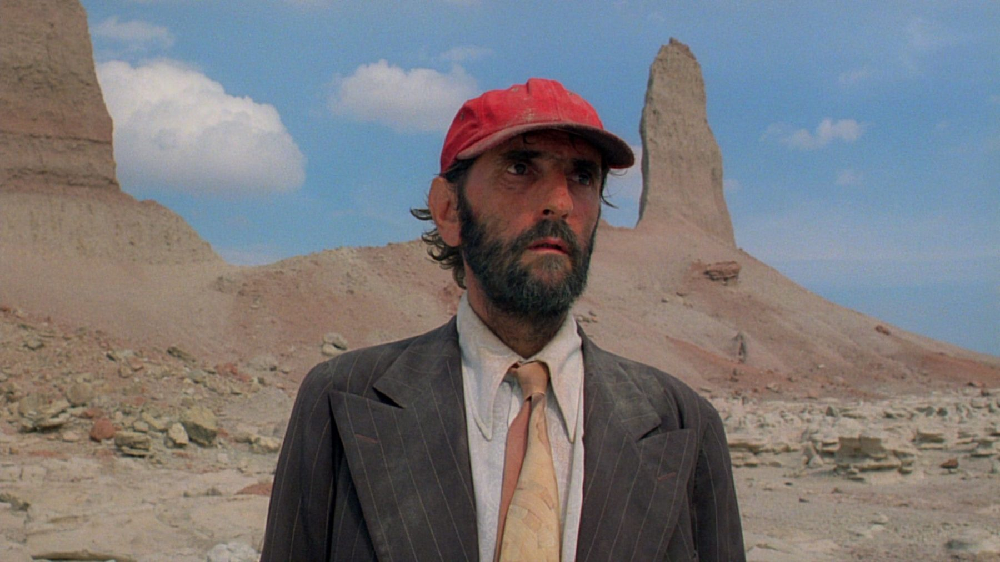

Wim Wenders, 1984

Travis Henderson (played by Harry Dean Stanton) emerges from the vast, arid West Texas desert after having been missing for four years.
There’s nothing particularly unique about Paris, Texas. It’s a quite straightforward film. The film begins with Travis wandering aimlessly in desolate Texas. His younger brother Walter, who has found him after four years of disappearance, comes to get him. Walter brings Travis back to his home, where Travis is reunited with his son, Hunter. Initially, Hunter is distant, but he gradually warms up to his father’s efforts to reconnect.
The film is heavily influenced by the classic film The Searchers (1956). Many people misunderstand Ford’s intentions with The Searchers, a film that also heavily influenced Taxi Driver (1976). In all three films, the audience’s perspective on the narrative and the actions of the main character is challenged. None of the main characters are traditional protagonists; they take extreme actions driven by their intense principles or circumstances, which isolate them from normalcy and the world they once knew.
In Paris, Texas, Travis’s actions further isolate him from his brother and sister-in-law, despite their efforts to help him. Travis has no intention of assimilating into society again. The story begins with Travis’s brother flying out to find him and bring him home. Travis remains silent for the first few days they are together, indicating his firm decision to remain in isolation. This isolation might be an attempt to protect others from himself, although that might not have been his conscious intention.
All three stories share a similar structure. The main character starts with an extreme lifestyle or perspective, the world intersects with their life trying to normalize them, leading to some destruction and some good. Ultimately, the main character remains driven by the same internal forces that isolated them initially. They may change slightly, but not enough to alter their path significantly. Their extreme choices may make sense to them, but their intense self-focus prevents them from moving beyond their initial state. The world attempting to assimilate them can be seen as a parallel to the audience watching the movie.
Society has broken Travis in some way, reflected by the film’s frequent depiction of technology. He follows power lines and train tracks, symbolizing his retreat to isolation at society’s edge. This mirrors John Wayne’s character in The Searchers, who is displaced from society by his prejudices and survival skills post-Civil War. Travis realizes that remaining silent is worse than confronting his fears. Though a coward, he becomes a hero by overcoming his cowardice.
Travis, after emerging from his meditative state, reenters society with the aim of healing the trauma he caused. He is trying to mend generational wounds, possibly ones he experienced as a child. His longing for Paris, Texas symbolizes the inherent love children expect from their parents. By buying a plot of land to build a family home, he envisions the act of love through physical connection, a naive notion as he is essentially a man-child.
In my opinion, Travis is a redemptive figure, representing grace in a society that has moved beyond its need. The scene with the doomsayer, where Travis touches his back, mirrors the angels from “Wings of Desire,” who try to comfort the distressed. If Travis hadn’t come out of the wilderness, Jane might still be lost, and Hunter would always wonder about her. Jane accepting her role as a mother at the end suggests she would return to Walt and Anne, forming a more complete family. Instead of two dads, Hunter has two moms and one dad.
Hunter would always have questions about his biological parents, no matter how much love his adoptive parents provide. Travis’s main goal upon returning is to find Jane and share his thoughts from the past four years. This includes forgiving her for running away with Hunter and burning down their house while he slept. By reuniting Jane with Hunter and stepping aside, Travis affirms Jane’s worthiness as a mother despite her shame and regrets. Jane, younger and confused during their relationship, was deeply affected by Travis’s psychological breakdown. The scene of them talking in the booth, with their faces overlapping, suggests they are two parts of a whole, with Hunter representing the next generation of Paris, Texas.
Travis is essentially a character who has already judged himself. Throughout the film, he behaves cowardly, pretending to be mute, refusing to elaborate or ask for help, and avoiding connections with others. This seems to be his way of self-condemnation, as he doesn’t feel he deserves kindness and doesn’t allow himself to accept it. His sole focus is on making amends for the terrible wrong he committed against his loved ones, those he should have done more for. However, love is far more complex than that; it’s about what is built on both sides, not just what one deserves or earns.
There are some problematic elements in the film, particularly regarding dialogue and thoughts about parents, blood relations, and Hunter’s adoption. It’s frustrating because taking Hunter out of his stable home in the middle of the school year by his previously absent abusive father is hardly a ‘natural’ solution. The idea that a blood relationship entitles someone to a child is not right in the real world. However, in the hyper-reality of film, the bond between them cannot be denied, and whatever reparative effort Travis is making, Hunter has to experience it for himself. Fortunately, Hunter still has a safe and loving place to return to, which Travis refuses to accept for himself.
Despite everything, the ending is still heartwarming. Travis was the one keeping Jane and Hunter apart. He created the schism and forced them apart through trauma and implicit threats. His single great reparative act was acknowledging his actions, removing his oppressive hold on Jane, and exiling himself from their world. It’s not a perfect resolution, but it is one small connection repaired.
As humans, we all make mistakes, some more significant than others. I sympathize with Travis personally because I see my own parts reflected in him. He’s filled with regret but lacks the emotional capacity to fix things, and some mistakes are simply irreversible. Despite his best efforts, nearly everyone is worse off after his return. The humiliation and sense of worthlessness he experiences are profound.
One important detail that I think most overlook is the film’s title. Paris is a city romanticized for its opportunities and beauty, while Paris, Texas, is a desolate and forgotten place. In life, many people have an idealized vision of how their lives will unfold, but this vision often crumbles due to circumstances or self-inflicted wounds. We strive for the idealized “Paris,” but it’s an illusion. What we end up with is more like Paris, Texas.